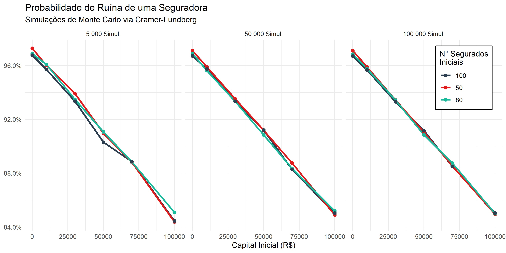

Introdução do problema e a linguagem Julia
Recentemente tenho utilizado a linguagem de programação Julia para problemas de simulação ou de problemas que necessitem bastante processamento computacional. Inclusive, utilizei ela no meu Trabalho de Conclusão de Curso (TCC) e isso foi uma boa forma de alavancar o aprendizado da nova ferramenta.
Eu escolhi ela devido a capacidade de resolver o problema das duas linguagens, two language problems, ao permitir (i) prototipar um código funcional e (ii) alcançar uma excelente performance computacional, tudo isso sem a necessidade de reescrever o algoritmo novamente em uma linguagem compilada como o C/C++, por exemplo.
Então quero compartilhar um caso em que o uso da linguagem foi vantajoso computacionalmente e que, provavelmente, muitos alunos de ciências atuariais irão se deparar no decorrer do curso, que é o cálculo da probabilidade de ruína de uma seguradora através de simulações de Cramér-Lundberg via simulação de monte-carlo.
Caso queiram conferir todos os códigos implementados sem precisar conferir todo o passo-a-passo abaixo, segue o repositório do github.
O algoritmo simula o patrimônio líquido de uma seguradora no tempo (discreto) de 10 anos (120 meses), visando obter a probabilidade de ruína da companhia ao calcular a razão entre os casos simulados que houveram ruína e o total de casos simulados. Aqui irei abordar o caso clássico, mas futuramente posso trazer variações mais avançadas que incorporam mais variáveis relevantes para o problema.
Eu também apresentarei os mesmos passos em Julia e Python para que no final o leitor possa reproduzir e comparar o tempo de processamento de ambos na sua máquina pessoal.
Premissas do problema
- Serão avaliado 120 meses (10 anos) do patrimônio líquido da empresa
- É assumido um prêmio constante de 500 reais por cliente
- A adesão de novos clientes é regida por uma distribuição \(Poisson(\lambda)\) com média 50. (\(n_t\))
- É incorporado uma desistência de 5%, considerada antes das novas adesões
- Para o cálculo do Sinistro Agregado, \(S_t\):
- O número de sinistros \(N_t\) segue uma distrib. \(Poisson(\lambda)\) com média igual a 10% da base de clientes naquele mês
- Cada sinistro, \(X_t\), segue uma distrib. \(Exp(\alpha)\) de média 5000.
Metodologia
O modelo clássico de Cramer-Lundberg simula o comportamento do patrimônio líquido através da seguinte fórmula discreta:
\[U_t = U_{t-1} + P_t - S_t\]
em que \(t = 1,...,n\)
Nele, assumimos um valor de patrimônio inicial (\(U_0\)) para o início da passagem do tempo \(t\), que será um parâmetro de estudo de cenários. Em seguida, assume-se que \(P_t = c*n_t\), onde o valor de prêmio do período é a soma da constante de prêmio vezes o número de clientes do período, conforme modelado na seção anterior.
Por fim, adentramos no cálculo do Sinistro Agregado ou Sinistro Convoluto (\(S_t\)), que é basicamente a convolução das duas variáveis aleatórias seguinte:
- \(N \sim Poisson(\alpha = 0.1*n_t)\), que simula a quantidade de sinistros ocorridos.
- \(X \sim Exp(\lambda = 1/5000)\), que simula a severidade dos sinitros ocorridos.
Dessa forma, tem-se como Sinistro Agregado a seguinte forma:
\[S_t = \sum_{i=1}^{N_t} X_i\]
em que simula-se inicialmente o número de sinistros ocorridos através de uma distribuição Poisson e em seguida sorteia-se o valor dos sinistros ocorridos através de uma distribuição Exponencial.
Com isso, podemos simular, por exemplo, 5000 vezes essa trajetória do patrimônio líquido (\(U_t\)) e verificar quantos casos houveram a ruína da companhia (\(U_t < 0\)). Desse modo, a proporção entre os casos de ruína sobre o total simulado equivale a probabilidade de ruína da seguradora, dado as premissas adotadas (\(\psi(U_0) = \frac{N_{ruinas}}{N_{simulações}}\)).
Codando o algoritmo
Primeiro importamos os pacotes necessários para as duas linguagens.
Julia
using Distributions
Python
import numpy as np
from numpy.random import exponential as expn
from numpy.random import poisson as poiss
Número de clientes
Abaixo encontra-se a implementação da equação final do número de segurados (\(N_t\)), onde a função possui como argumentos o número de segurados iniciais, no tempo t=0, a distribuição Poisson correspondente a quantidade de novos clientes por mês e o valor do tempo t avaliado. Isso permite obter a quantidade de segurados em qualquer tempo t, sem a necessidade de calcular o vetor completo do instante 1 até t.
Julia
function novos_clientes(N₀, poiss, t)
C = N₀*0.95^t + 20*(1 - 0.95^t)*rand(poiss)
round(Int, C)
end
Python
def novos_clientes(N, lbds, i):
clientes = N*0.95**(i-1) + 20*(1 -(0.95)**(i-1))*poiss(lbds)
return int(clientes)
Sinistro Convoluto
Primeiro é sorteado o número de sinistros ocorridos na variável N, seguindo uma distribuição de Poisson. Em seguida, sorteia os N valores de sinistros que seguem a distribuição Exponencial. E por fim, soma-se todos os valores sorteados, totalizando o sinistro agregado do período.
Julia
function sin_convol(expn, cliente)
N = rand(Poisson(0.1 * cliente))
sum(rand(expn, N))
end
sin_convol (generic function with 1 method)
Python
def sin_convoluto(alpha, cliente):
N = poiss(0.1 * cliente)
S = expn(alpha, N)
return np.sum(S)
Verificando se houve ruína
Dado os argumentos de k simulações, Número de segurados iniciais \(N_0\), média da Poisson \(\lambda\), média da Exponencial \(\alpha\), Patrimônio Inicial \(U_0\) e valor da constante de prêmio \(c\), a função calcula o patrimônio líquido \(U_t\) para cada instante \(t\) e verifica se o patrimônio ruiu ou não, retornando assim o valor 1 se a empresa ruiu ou 0 se a empresa não ruiu.
Inicialmente criei o algoritmo fazendo o cálculo dos vetores completos (120 meses) para depois avaliar se houve ruína ou não. Porém isso é ineficiente e por isso ajustei o código para calcular cada elemento no instante t correspondente. Desse modo não há cálculos desnecessários na simulação de monte-carlo.
Julia
function testa_ruina(k, N₀, λ, α, U₀, c)
# vetor do patrimônio líquido
U = Vector{Float64}(undef, k)
# gera os tipos de distribuições do modelo
poiss = Poisson(λ)
expn = Exponential(α)
# executa o primeiro mês para considerar o argumento U₀
ncliente = novos_clientes(N₀, poiss, 1)
P₁ = c * ncliente
S₁ = sin_convol(expn, ncliente)
U[1] = U₀ + P₁ - S₁
# executa os demais caminhos para verificar se houve ruína
R = 0
for i in 2:k
ncliente = novos_clientes(N₀, poiss, i)
Pᵢ = c * ncliente
Sᵢ = sin_convol(expn, ncliente)
U[i] = U[i-1] + Pᵢ - Sᵢ
if U[i] < 0
R = 1
break
end
end
return R
end
Python
def testa_ruina(K, N0, lbds, alpha, U0, C):
U = np.array([])
ncliente = novos_clientes(N0, lbds, 1)
P1 = C * ncliente
S1 = sin_convoluto(alpha, ncliente)
U = np.append(U, U0)
U[0] = U[0] + P1 + S1
R = 0
for i in range(1, K):
ncliente = novos_clientes(N0, lbds, i)
P = C * ncliente
S = sin_convoluto(alpha, ncliente)
new_U = U[i-1] + P - S
U = np.append(U, new_U)
if U[i] < 0:
R = 1
break
return R
Simulando a probabilidade de ruína
Utilizando a função anterior é possível repetir esse teste X vezes e assim calcular a probabilidade de ruina fazendo a soma dos casos de ruína, dividido pelo número de simulações realizadas. Este cálculo de probabilidade foi encapsulado na seguinte função.
Julia
function prob_ruina(n_sim; k=120, N₀=50, λ=50.0, α=5000.0, U₀=10000.0, c=500.0)
R = Vector{Float64}(undef, n_sim)
for i in 1:n_sim
R[i] = testa_ruina(k, N₀, λ, α, U₀, c)
end
return sum(R)/n_sim
end
Python
def prob_ruina(NSIM, K=120, N0=50, lbds=50, alpha=5000, U0=10000, C=500):
ruinas = np.array([])
for _ in range(NSIM):
ruinas = np.append(ruinas, testa_ruina(K, N0, lbds, alpha, U0, C))
return np.sum(ruinas) / NSIM
Avaliando diferentes cenários
Visando compreender o impacto do capital inicial e do número de segurados iniciais na probabilidade de ruína, gerei 24 cenários diferentes que consideram os valores de 50, 80 e 100 para o número de segurados, e para o capital inicial considera desde o capital 0 até 1 milhão. Abaixo estão todos os 24 cenários que são todas as combinações das duas variáveis.
capital = Float64[0, 10000, 30000, 50000, 70000, 100000, 500000, 1000000];
nseg = [50, 80, 100];
combin_prod = Base.product(nseg, capital) |> collect;
combin = [combin_prod...]
24-element Vector{Tuple{Int64, Float64}}:
(50, 0.0)
(80, 0.0)
(100, 0.0)
(50, 10000.0)
(80, 10000.0)
(100, 10000.0)
(50, 30000.0)
(80, 30000.0)
(100, 30000.0)
(50, 50000.0)
⋮
(50, 100000.0)
(80, 100000.0)
(100, 100000.0)
(50, 500000.0)
(80, 500000.0)
(100, 500000.0)
(50, 1.0e6)
(80, 1.0e6)
(100, 1.0e6)
Para executar as 5000 simulações nos 24 cenários diferentes, eu passo o vetor dos cenários na função map() para que se aplique a função da simulação em cada um dos cenários.
k_sim = 5000;
probs_ruina = map(combin) do x
prob_ruina(k_sim, N₀ = x[1], U₀ = x[2]);
end;
results =[vcat(collect.(combin)'...) probs_ruina];
Análise dos cenários
Com os resultados, podemos gerar a tabela base com os resultados dos cenários.
using DataFrames, PrettyTables
df_ruina = DataFrame(nseg = results[:,1],
cap_ini = results[:,2],
prob_ruina = 100 * results[:,3]);
pretty_table(df_ruina,
nosubheader=true,
title = "\nResultado das 5 mil simulacoes";
formatters = (ft_printf("%6.0f", 2),
ft_printf("%5.2f", 3)) )
Resultado das 5 mil simulacoes
┌──────┬─────────┬────────────┐
│ nseg │ cap_ini │ prob_ruina │
├──────┼─────────┼────────────┤
│ 50 │ 0 │ 96.86 │
│ 80 │ 0 │ 96.32 │
│ 100 │ 0 │ 96.68 │
│ 50 │ 10000 │ 95.22 │
│ 80 │ 10000 │ 95.92 │
│ 100 │ 10000 │ 95.60 │
│ 50 │ 30000 │ 93.34 │
│ 80 │ 30000 │ 93.42 │
│ 100 │ 30000 │ 93.10 │
│ 50 │ 50000 │ 91.52 │
│ 80 │ 50000 │ 90.68 │
│ 100 │ 50000 │ 90.86 │
│ 50 │ 70000 │ 88.68 │
│ 80 │ 70000 │ 89.14 │
│ 100 │ 70000 │ 89.04 │
│ 50 │ 100000 │ 85.24 │
│ 80 │ 100000 │ 85.32 │
│ 100 │ 100000 │ 84.80 │
│ 50 │ 500000 │ 44.08 │
│ 80 │ 500000 │ 45.62 │
│ 100 │ 500000 │ 44.92 │
│ 50 │ 1000000 │ 14.52 │
│ 80 │ 1000000 │ 13.96 │
│ 100 │ 1000000 │ 14.62 │
└──────┴─────────┴────────────┘
Aumentando o número de simulações
Como Julia permite simular um número de cenários maior que python, eu testei a execução de 5000, 50000 e 100000 simulações para avaliar a convergência dos resultados e gerei um gráfico com R que resume bem a análise dos cenários e do número de simulações.

Com o gráfico fica claro a relação inversa do capital inicial e do número de segurados com a probabilidade de ruína da seguradora. Quanto maior o capital inicial ou número de segurados iniciais, menor a chance da empresa ruir. Além disso, com 100.000 mil simulações observa-se uma boa convergência dos resultados com pouca variância nos resultados, não havendo assim a necessidade de aumentar o número de simulações para obter um resultado satisfatório.
Código Julia final
abaixo segue uma imagem com todo o código Julia implementado em uma imagem resumo feita na plataforma Carbon.

No seguinte repositório do github encontram-se os códigos mais detalhados, inclusive o script R que utilizei para a geração do gráfico final.